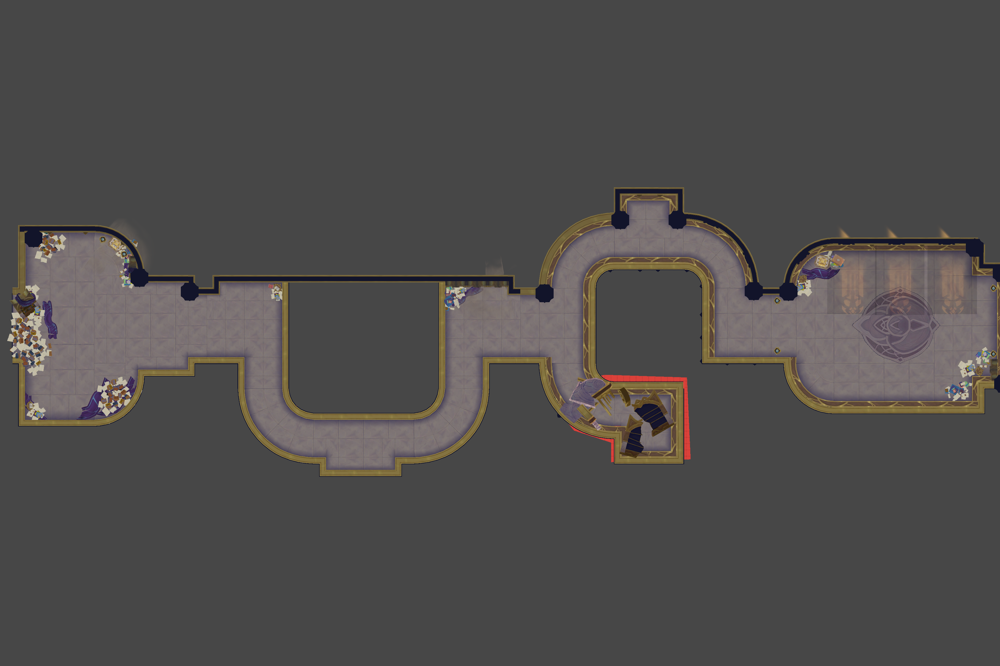
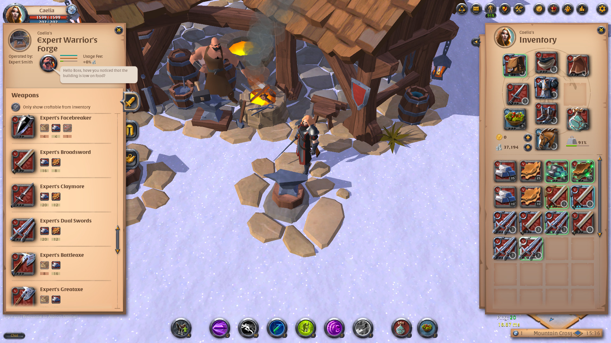
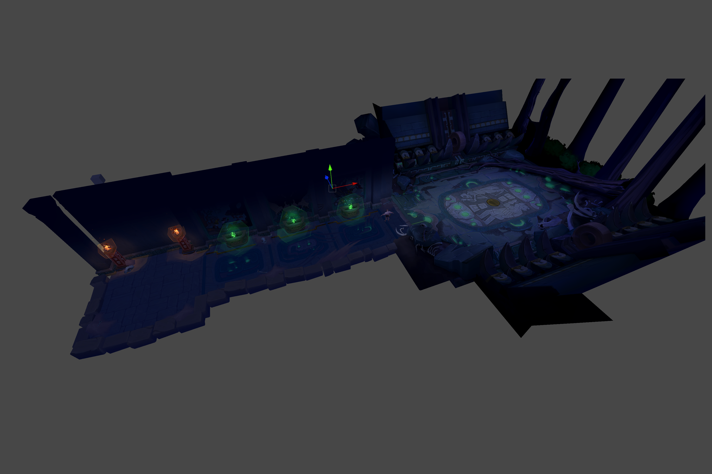
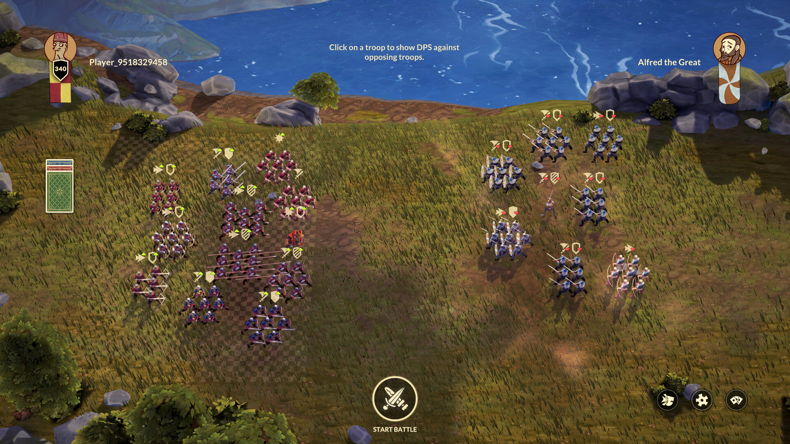
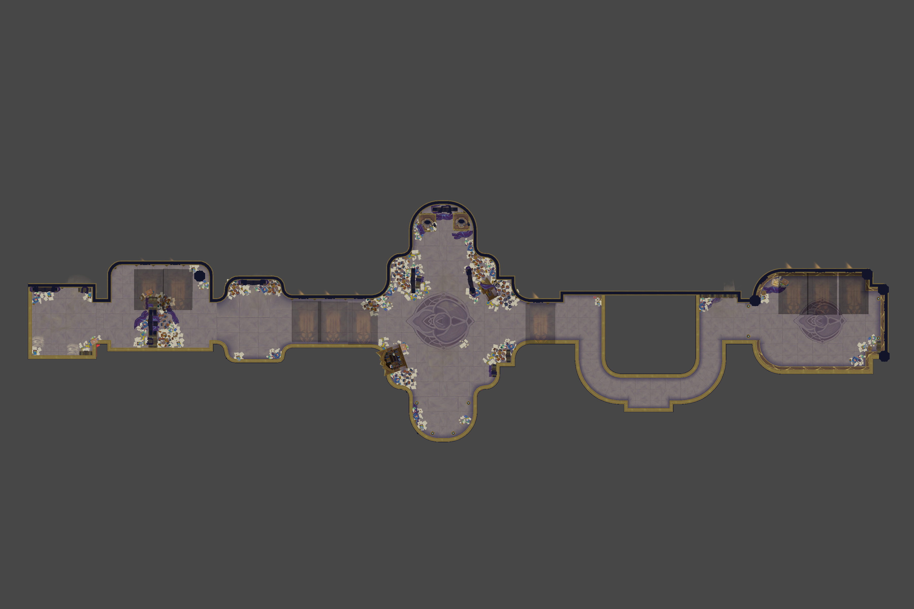

Selected work from a career spent between level design and programming — tile systems,
template pipelines, procedural-content planning and the small tools that turn a 30-minute job into
a one-minute one.
Click a project card to open the full case study. Feel free to reach out via the
contact section.